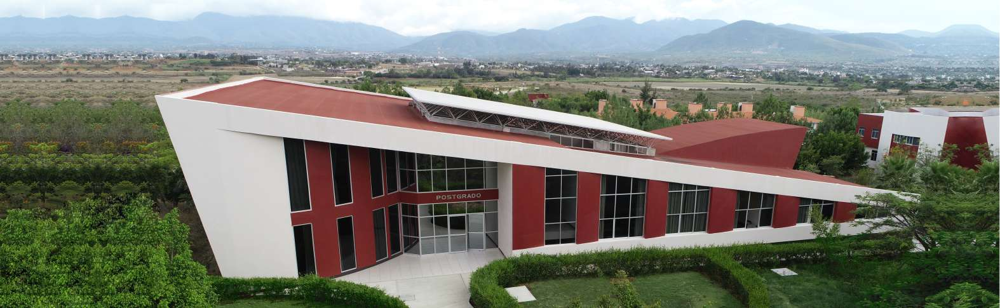
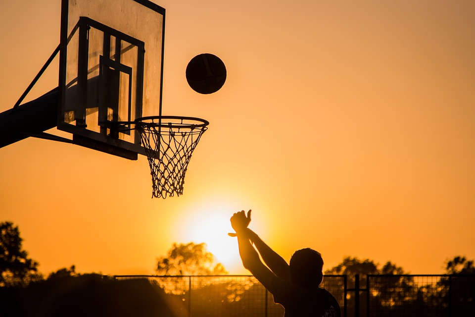

Inicio Noticias Eventos
Equipo de basquetbol de informatica gana su primer partido

El equipo de basquetbol de informatica famosamente conocido como: "UNSINenes"ganó su primer partido contra FC Aurrera.
Este enfrentamiento amistoso se dio el dia 11 de noviembre del 2025. Dando como resultado una victoria a favor del equipo de informatica.
Este equipo que enorgullece a nuestra carrera, se compone de: Jesus, David Aquina, Adalberto, David Garcia y Ulises.